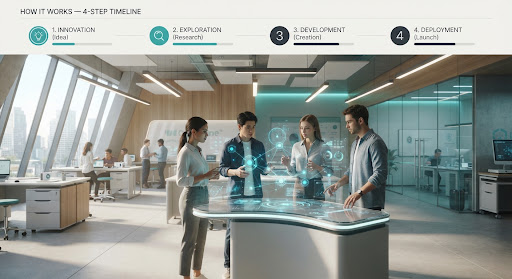

Lifelong Hyper-Personalized Education
Adaptive AI tutors that evolve alongside a student from middle-school exploration through PhD breakthroughs — preserving cognitive sovereignty without predatory data lock-in.
Self-Sovereign Learning Zero Lock-In
Vision 2050 · Deep Dive
Solving genuine human challenges — engineered to outlast hype cycles and endure for decades across generations of young builders.
Four strategic domains where durable AI matters most.
Adaptive AI tutors that evolve alongside a student from middle-school exploration through PhD breakthroughs — preserving cognitive sovereignty without predatory data lock-in.
Self-Sovereign Learning Zero Lock-In
Autonomous micro-climate sensory grids simulating biosphere equilibriums and neighborhood-level resource replenishment models through 2050 and beyond.
Micro-Grid Mesh Ecological Feedback
Decentralized diagnostic telemetry nodes operating on post-quantum cryptographic primitives — safeguarding personal molecular profiles against future unauthorized decryption.
Post-Quantum Crypt Edge Diagnostics
Transparent, consensus-driven systems empowering local youth collectives with genuine democratic agency over urban planning, municipal budgets, and algorithmic ethics.
Decentralized Voting Youth Collectives
Future-Proof Blueprint
No complex jargon. Here is how modern builders craft AI that stands the test of time. Tap a step to expand it.
Decouple your user interface from the underlying language model, so upgrades never break logic.
Structure your code with open interchange formats and strict API contracts between agents, so each piece can be replaced independently.
Simulate 5-year edge cases, outdated data injection, and bias perturbations proactively — before real users meet them.
Systems that dynamically re-index knowledge graphs and self-audit alignment logs, evolving quietly in the background.
The Core Tenet
“The Golden Rule: never hardcode intelligence into your architecture.”
Intelligence evolves exponentially every 18 months. Design your pipes, protocols, and interfaces as timeless conduits — letting the brain swap without rebuilding the body.

Technological Archaeology
Learn from historical breakthroughs and catastrophic failures to architect enduring technology.
I started coding when tutorials promised that learning one specific framework would guarantee a lifelong career. Ten years later, that framework is history.
Too much current AI discourse is sensationalist noise designed to make students anxious about obsolescence. I created Future Proof AI because durable engineering isn’t about chasing the weekly shiny model — it is about mathematical clarity, systems empathy, and the quiet joy of understanding how machines truly think.
Crafted with hope for generation 2050.
Questions, collaboration ideas, or just want a study buddy? We read everything.